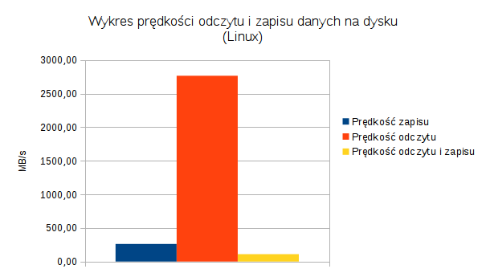

NAZWA TESTU
Wstęp
Wstępne informacje na temat testu (co testuje). W przypadku, gdy test został wykonany na kilku maszynach należy wymienić na jakich systemach został on przetestowany
"Procedura testowa"
Informacje na temat konkretnego testu - jakie operacje są testowane, użyte w programie parametry
Raport dla pojedynczego systemu
Przedstawienie wyników dla konkretnego systemu
Tabela - wyniki ogólne
| Parametr 1 | Parametr 2 | Parametr 3 | |
|---|---|---|---|
| Średnia arytmetyczna | Wynik | Wynik | Wynik |
| Odchylenie standardowe | Wynik | Wynik | Wynik |
| Wartość maksymalna | Wynik | Wynik | Wynik |
| Wartość minimalna | Wynik | Wynik | Wynik |
Tabela - wyniki szczegółowe
| Parametr 1 | Parametr 2 | Parametr 3 | |
|---|---|---|---|
| Komputer 1 | Wynik | Wynik | Wynik |
| Komputer 2 | Najlepszy | Wynik | Wynik |
| Kopmuter 3 | Wynik | Wynik | Wynik |
| Komputer 4 | Najgorszy | Wynik | Wynik |
Podsumowanie
Wskazanie wyniku najlepszego i najgorszego
Kolejne sytemy
Analogicznie postępujemy dla innych testowanych systemów w danym teście - wykonujemy tabelę z wynikami średnimi, szczegółowymi i wskazujemy najlepsze oraz najgorsze wyniki
Podsumowanie kilku systemów
Wykres
Zawiera jeden testowany parametr (jeśli testowano kilka to należywybrać jeden). Porównujemy średnią tego parametru dla różnych systemów
Przykładowy wykres
(Zamiast parametrów należy wstawić systemy)

Opis
Kilka słów autora na temat wykresu - jego interpretacja i wnioski